A more continuous little life
Actual game captures from 2 November 2026. These are rendered browser screenshots, not generated mockups. Read the sprint evidence.
Canonical NORI day 3
Compiled release candidate at localhost:5180, using its default content-hashed preview. The preview contains NORI #4’s genuine, settled Robinhood testnet day 3: one rose-planting undertaking and six Jev calls. This gallery records candidate presentation; it does not itself establish that the candidate has been deployed.
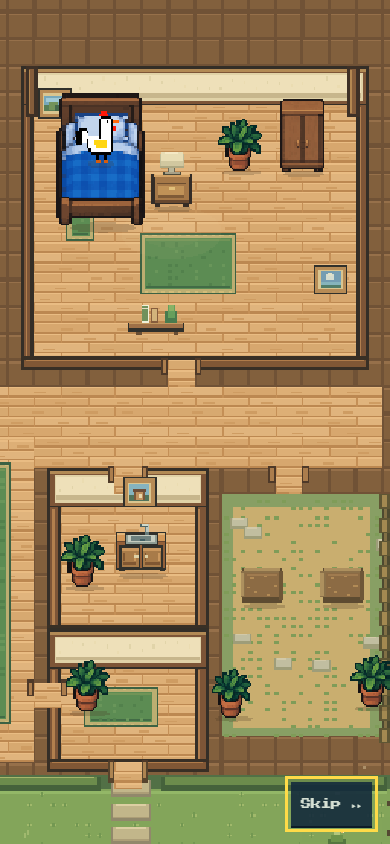
Preview loadingCanonical recorded testnet day390 ×844 · Compiled candidate, before the delayed packet response. NORI already appears in the same bed.
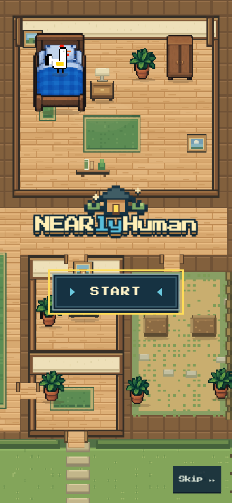
Native titleCanonical recorded testnet day390 ×844 · The actual house provides the title backdrop.
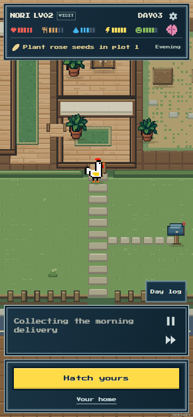
Through the front doorCanonical recorded testnet day390 ×844 · Natural playback, walking from the bedroom to the mailbox.
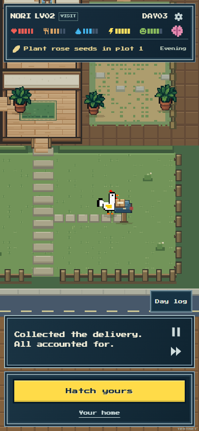
Morning collectionCanonical recorded testnet day390 ×844 · Natural playback at the outside mailbox.
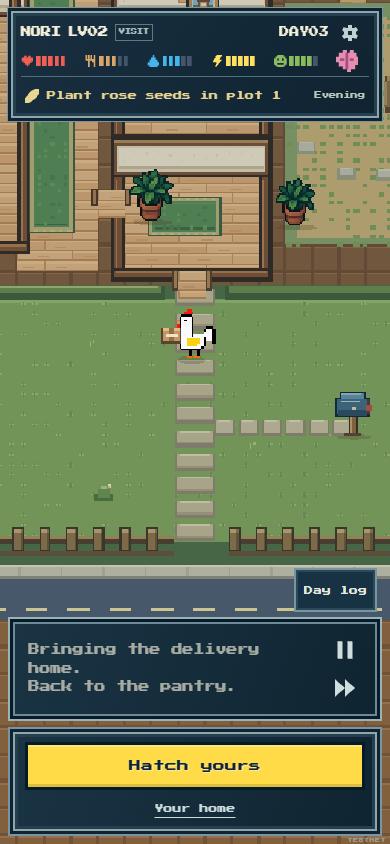
Bring it homeCanonical recorded testnet day390 ×844 · Natural playback, carrying the parcel from the mailbox toward the front door.
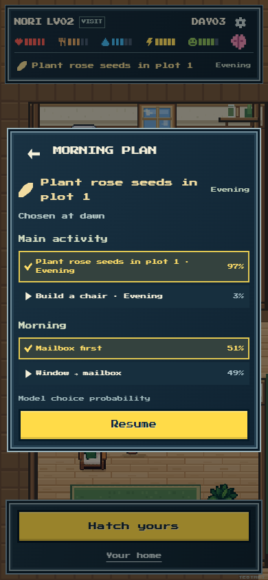
The morning planCanonical recorded testnet day390 ×844 · Saved Jev project and morning-order probabilities.
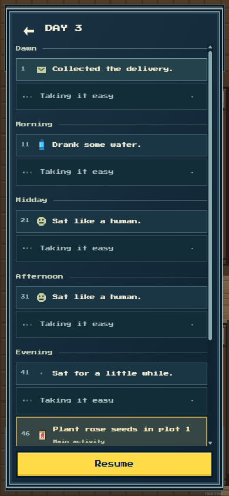
A readable dayCanonical recorded testnet day390 ×844 · One highlighted undertaking, care moments and grouped quiet time.
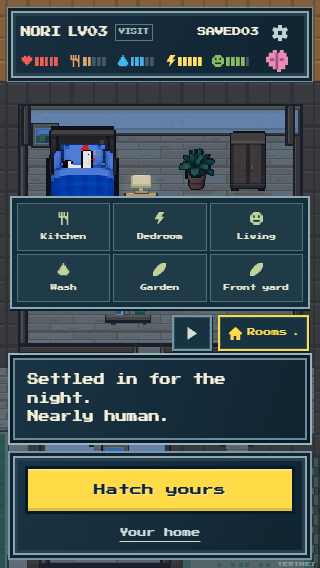
Rooms on a small phoneCanonical recorded testnet day320 ×568 · Six room controls in a balanced3×2 grid.
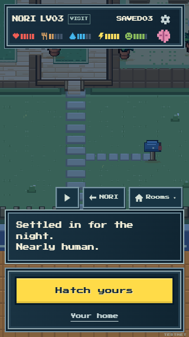
Explore the front yardCanonical recorded testnet day320 ×568 · Post-visit exploration, after the rooster settled for the night.
The full natural watch
The separately observed day reached its natural ending in 70.257 seconds with all 60 original moments retained and the final needs, stock and plots matching the canonical packet. This watch and the canonical screenshots use compiled candidate index-D6lyQZGL.js, before the final seating-only refinement.
The 28-second morning recording follows bed → mailbox → parcel → pantry without seeking.
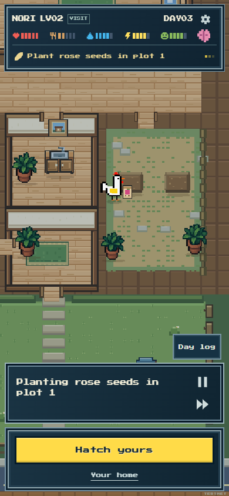
One longer undertakingCanonical day · full natural watch390 ×844 · Full natural playback: seed packet and work at the plot, before impact.
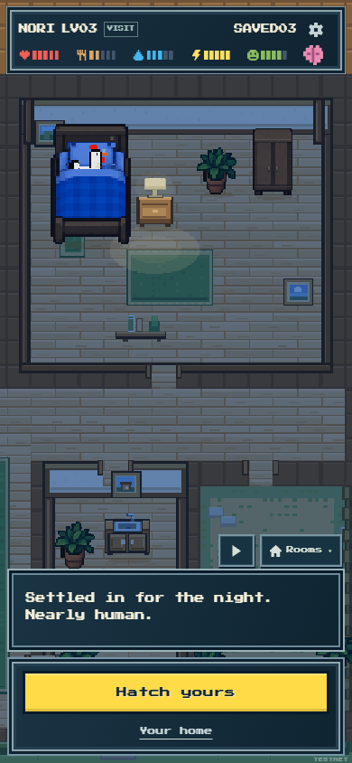
A continuous day endsCanonical day · full natural watch390 ×844 · Full natural playback: returned to bed after all 60 recorded moments.
Earlier diagnostic comparison
The four captures below use an earlier genuine Jev diagnostic guest, COCO. That day was not committed onchain. They show an alternative morning order and pre-/post-work feedback and must not be presented as NORI’s canonical day.
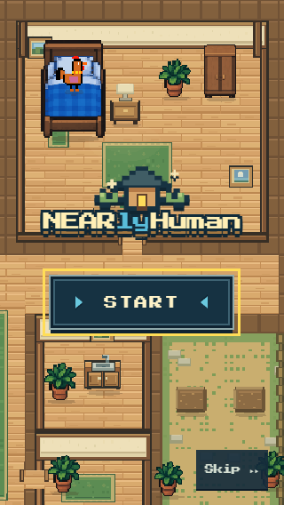
Alternate identityEarlier uncommitted Jev diagnostic320 ×568 · Earlier genuine Jev diagnostic guest COCO; this is not the canonical public visit.
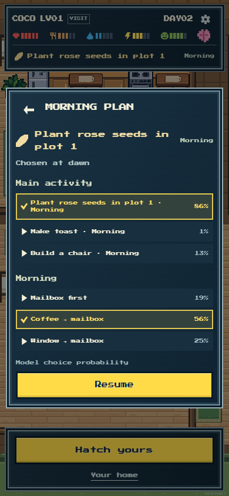
Coffee before collectionEarlier uncommitted Jev diagnostic390 ×844 · Earlier genuine Jev diagnostic plan; COCO chose coffee → mailbox.
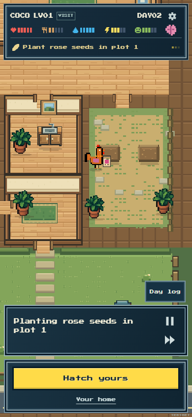
Work before the resultEarlier uncommitted Jev diagnostic390 ×844 · Earlier genuine Jev diagnostic day; the seed packet and work caption precede planting.
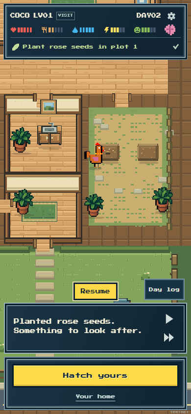
Result after impactEarlier uncommitted Jev diagnostic390 ×844 · Earlier genuine Jev diagnostic day; planted outcome and checkmark appear after impact.